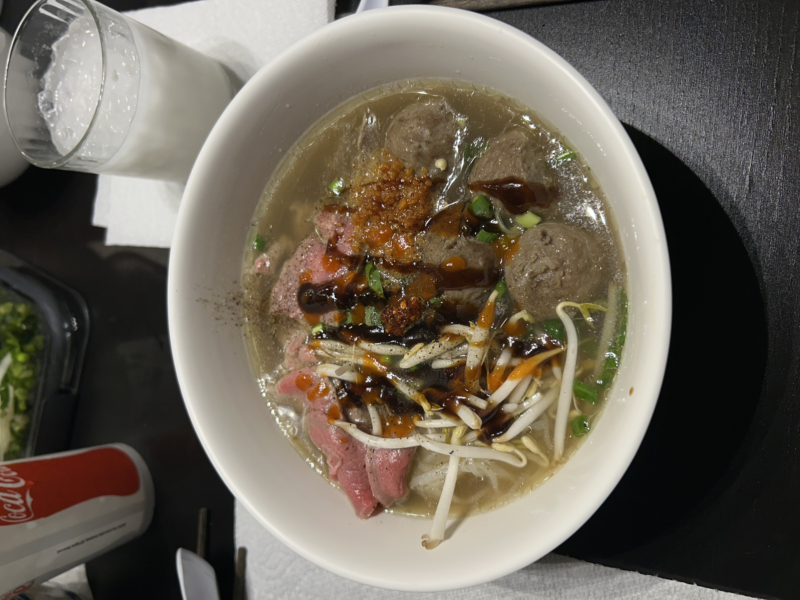
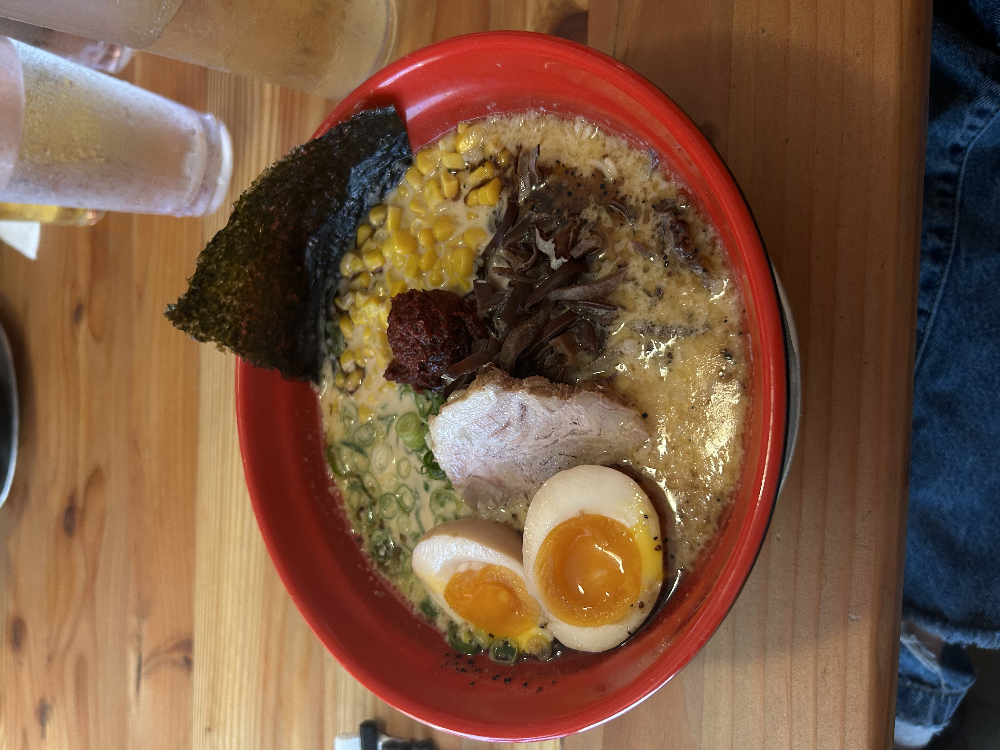
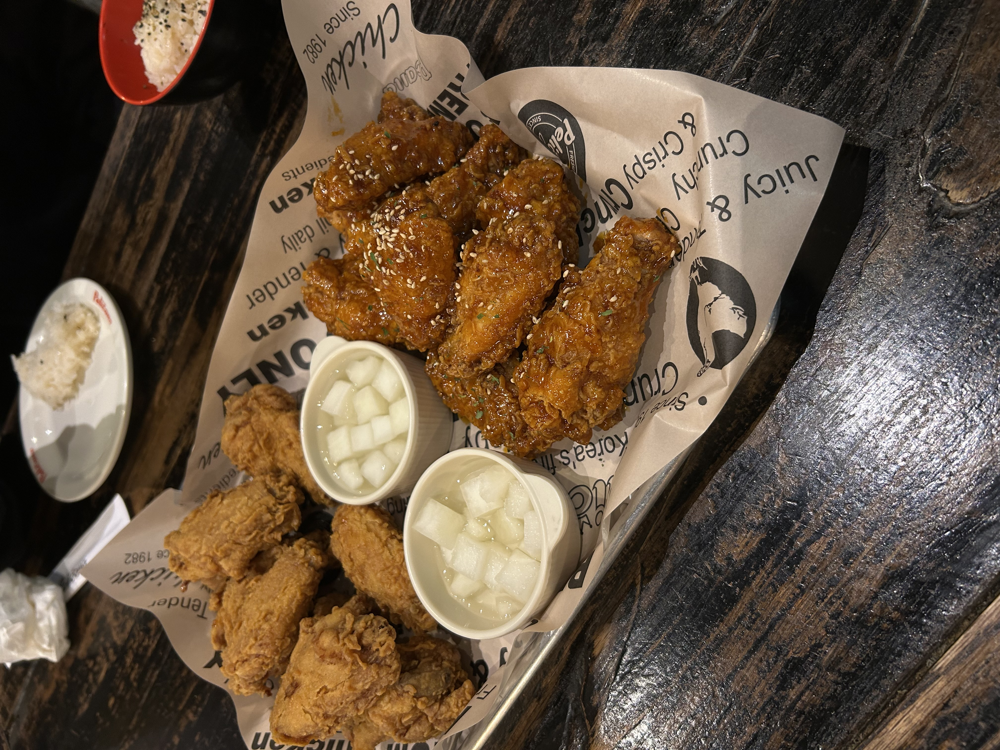
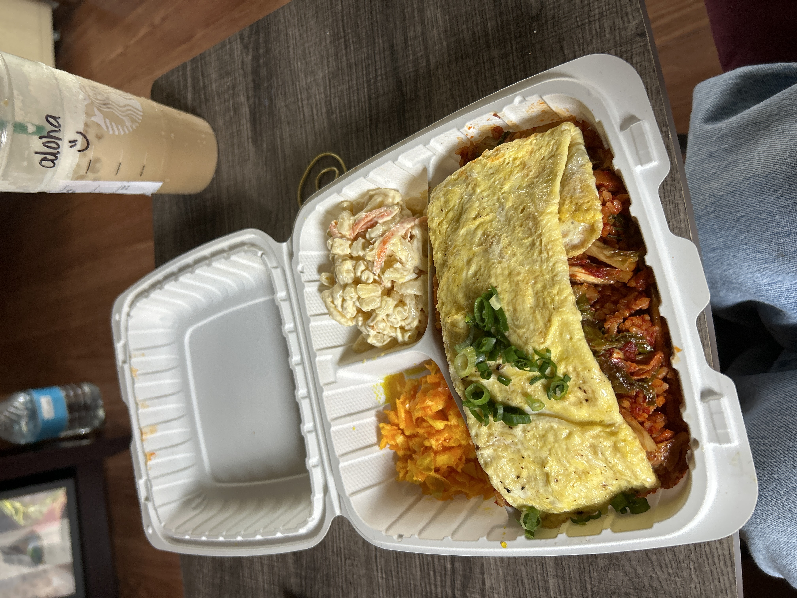
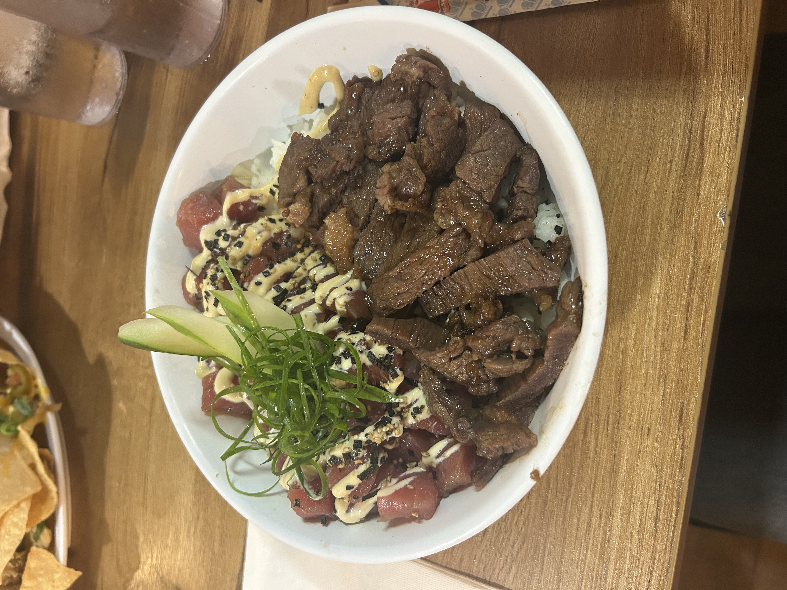

Asian Cuisine
Growing up in a multi-cultural household, Asian foods made up at least 80% of my diet. My mother would cook food constantly, not only from her own Lao culture, but other Asian foods as well. Growing up eating these different meals really helped me to adjust my tastebuds so I am not a picky eater.
Khao poon, a noodle soup dish from Laos, is one of my favorite Asian foods. Learn how to make it here.
| Foods I Have Tried | ||
|---|---|---|
| Pho | Tonkotsu Ramen | Korean Fried Chicken |
 |
 |
 |
| Pho is one soup that almost never gets old. Although the only times I eat it is when a family member makes it, rather than ever ordering it at a Pho restaurant, you simply cannot go wrong with this. The level of customization is perfect for those that may have certain preferences towards vegetables/meats, but that is what makes it so versatile as a soup. | Tonkotsu ramen is the definition of savory and absolutely perfect for a cold, rainy day. The rich broth is so filling and the numerous types of vegetable toppings that go inside just add to the burst of flavor that this ramen carries. | Korean fried chicken is a must-try for anyone that loves chicken. The crunchiness is like no other type of American fried chicken. The crispiness in combonation with the unique Asian flavors and sides is a take on classic a classic Southern food that works incredibly well. |
| Sushi | Kimchi Fried Rice | Ahi and Steak Poke Bowl |
 |
 |
 |
| Where to start? This may seem like a lot of food, but the small, palm-sized ball of rice with the lightness of the raw fish is the perfect portion for a bite every time. After trying fatty tuna for the first time, it immediately became my favorite type of sushi. Nothing beats the feeling of the fish melting in your mouth with the rice! | Kimchi fried rice is another delectable meal for someone that loves savory and spicy food. Since it is rice with vegetables and meats as add-ons, it is very filling. The combination of the rice with the fried omelette on top goes extremely well together, as each flavor balances the other out. | Yet another savory rice dish to add to the list. The slight salty flavor of the raw ahi next to the rich, tender flavor of the steak both work really well to contrast each other. Though the textures and flavors are very different from each other, they both compliment each other so well when sharing the rice in the same bite. |
| Foods I Have Tried | |
|---|---|
| Pho | Tonkotsu Ramen |
| Pho is one soup that almost never gets old. Although the only times I eat it is when a family member makes it, rather than ever ordering it at a Pho restaurant, you simply cannot go wrong with this. The level of customization is perfect for those that may have certain preferences towards vegetables/meats, but that is what makes it so versatile as a soup. | Tonkotsu ramen is the definition of savory and absolutely perfect for a cold, rainy day. The rich broth is so filling and the numerous types of vegetable toppings that go inside just add to the burst of flavor that this ramen carries. |
| Korean Fried Chicken | Sushi |
|
|
| Korean fried chicken is a must-try for anyone that loves chicken. The crunchiness is like no other type of American fried chicken. The crispiness in combonation with the unique Asian flavors and sides is a take on classic a classic Southern food that works incredibly well. | Where to start? This may seem like a lot of food, but the small, palm-sized ball of rice with the lightness of the raw fish is the perfect portion for a bite every time. After trying fatty tuna for the first time, it immediately became my favorite type of sushi. Nothing beats the feeling of the fish melting in your mouth with the rice! |
| Kimchi Fried Rice | Ahi and Steak Poke Bowl |
| Kimchi fried rice is another delectable meal for someone that loves savory and spicy food. Since it is rice with vegetables and meats as add-ons, it is very filling. The combination of the rice with the fried omelette on top goes extremely well together, as each flavor balances the other out. | Yet another savory rice dish to add to the list. The slight salty flavor of the raw ahi next to the rich, tender flavor of the steak both work really well to contrast each other. Though the textures and flavors are very different from each other, they both compliment each other so well when sharing the rice in the same bite. |